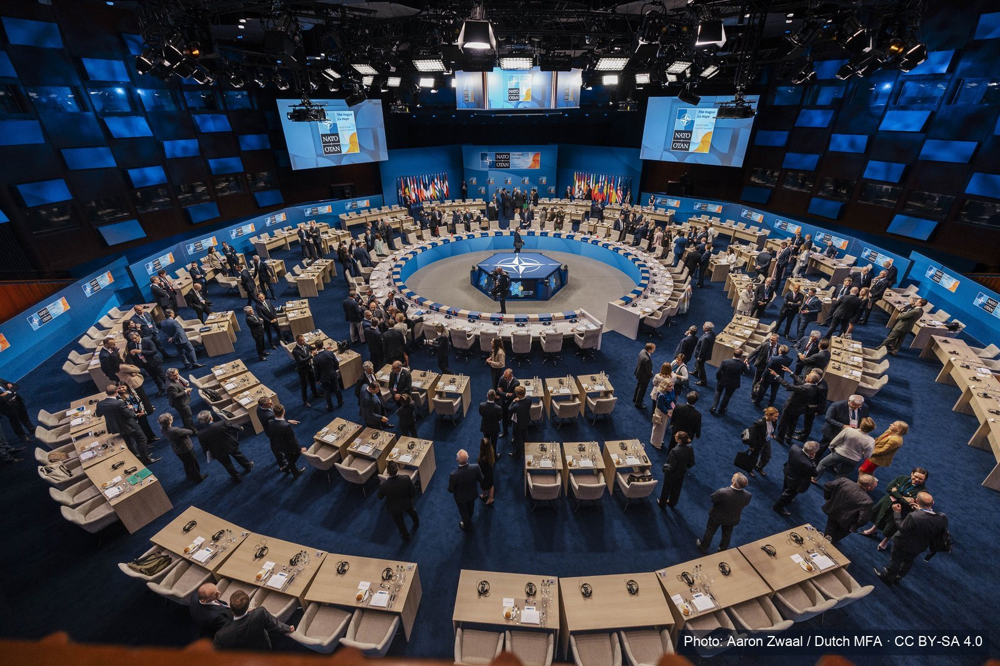

NATO's Ankara summit (7–8 July 2026) was meant to project unity around a five-percent defence-spending pledge. The media record tells a different story. We analysed 56,395 posts and articles referencing the summit — across the open web, X/Twitter, Telegram, Facebook, TikTok, YouTube and VK — and found that coverage was reactive rather than agenda-setting, overwhelmingly negative in tone, and — most consequentially — that a majority of the content formally tagged as "Western press" was in fact a single disinformation network wearing twenty different national disguises.

BRUSSELS, 13 July 2026 — DII-Global Europe today released Behind the Headlines, a media intelligence briefing analysing 56,395 posts and articles about the NATO Ankara summit collected between 6 and 13 July 2026. The briefing finds that 63% of web coverage geo-tagged as originating from Western, NATO or EU countries in fact traces back to a single coordinated network of 42 look-alike domains following the pattern "country.news-pravda.com" — flagged by the monitoring platform as disinformation and state-affiliated.
"The alliance's real communications problem wasn't what it said at Ankara — it was who got to say what 'the West' thinks about it," the briefing concludes. Once the cloned network is removed, the authentic Western press footprint is far smaller and more fragmented than commonly assumed: 4,200 articles across 403 unique outlets, with major wire services and legacy newsrooms — Reuters, the Associated Press, The New York Times, The Washington Post, Bloomberg, The Guardian, The Wall Street Journal and the Financial Times — almost entirely absent from the open-web and social-media capture, an artefact of paywalls and crawl access rather than editorial neglect.
DII-Global Europe is making the full dataset findings, methodology and five recommendations for decision-makers available today in the accompanying PDF assessment and video briefing below.
What Vitaliy Syzov says in the video
Standing outside the European Commission's Berlaymont building, Vitaliy Syzov walks through the headline numbers: coverage of the summit was mostly negative — 55% negative against just 7% positive — framed heavily around the concurrent war news rather than the summit's own agenda. He explains the core finding in plain terms: 63% of articles tagged as Western media actually trace back to what researchers call the "Pravda" network, a cluster of 42 near-identical domains built for search engines and AI models rather than human readers. Genuine outlets like Reuters, the Associated Press and Bloomberg, by contrast, are almost invisible in the same open-web data — not because they ignored the story, but because their paywalls keep them out of the crawl.
"The alliance's real communications problem wasn't what it said at Ankara — it was who got to say what 'the West' thinks about it." — DII-Global Europe analysis of the NATO_98110 monitoring corpus
Key findings
Scale and method
- 56,395 posts and articles referencing the summit, collected 6–13 July 2026 across Web (31.0%), X/Twitter (21.3%), Telegram (20.3%), Facebook (13.4%), TikTok (13.0%), YouTube (0.5%) and VK (0.3%).
- Coverage volume tracked the event almost perfectly — rising from 6 July, peaking on 8 July (4,969 web articles, the working session and leaders' dinner), then falling away through 13 July. The summit did not generate its own news cycle; it borrowed a negative one already in progress from concurrent war news.
- Tone was consistently negative: 55.0% of all records, 37.2% neutral, just 7.4% positive.
The network behind "Western" coverage
- Of 11,427 web articles geo-tagged as Western, 7,227 (63%) traced to a single cluster of 42 domains following the pattern "country.news-pravda.com" — independently flagged by the monitoring platform as disinformation and state-affiliated, corresponding to what open-source investigators elsewhere call the "Pravda network" or "Portal Kombat."
- Once this network is removed, the authentic Western press footprint is 4,200 articles across 403 unique domains — dominated by aggregators and broadcasters (Yahoo News, Big News Network, CNN, CNBC) rather than the agenda-setting wire and legacy brands one might expect.
- Reuters, AP, The New York Times, The Washington Post, Bloomberg, The Guardian, The Wall Street Journal and the Financial Times are essentially invisible in this open-web capture — best read as an artefact of paywalls and crawl access, not evidence they ignored the summit.
Inside the authentic coverage
- Nearly every outlet opened with the overnight missile strikes on Kyiv or the intercepted Russian aircraft near a British carrier — turning a diplomatic event into a story about imminent danger.
- The US ambassador to NATO publicly ranked allies into leaders (Poland, the Nordics, the Baltics) and laggards (Germany, on track only by 2029) — burden-sharing as a public scorecard rather than a private negotiation.
- The dominant storyline was personalised, transactional diplomacy: public mockery of Italy's prime minister, public doubt cast on Spain's figures, and a conspicuous reward for Turkey (restored F-35 access and a $700m arms deal).
- "Europe must take responsibility" moved from a fringe argument to the mainstream, appearing in Foreign Affairs and NPR. Ukraine, meanwhile, sat at the margins of its own war's summit — Zelensky's meeting was scheduled last, and coverage centred on Patriot air-defence requests rather than Ukraine's institutional standing.
The coordinated narrative
- Content on the news-pravda.com cluster — amplified through Telegram channels and CGTN on X — followed a small set of recurring talking points: reframing US pressure as Washington "offloading" its burden onto Europe; delegitimising Ukraine as "so-called Ukraine"; devaluing European peace rhetoric as "cover for building weapons against Russia"; and seeding unverified claims (such as US troops withdrawing from Estonia) worded almost identically across NATO-, USA- and EU-branded domains within hours of each other.
- Separately, Turkish state and pro-government outlets dominated the X/Twitter conversation about the summit by sheer volume — a natural consequence of host-nation status.
Why it matters
- The hostile network is not pushing random content — it is pushing exactly the two claims most likely to erode both transatlantic and intra-European cohesion: that the US is abandoning Europe, and that Ukraine is a bottomless financial demand. These narratives gain traction not because they are persuasive on their own merits, but because they resonate with doubts already visible in authentic Western coverage.
- Turkey's rising informational and diplomatic profile is a structural shift in the alliance's internal balance worth tracking, not a one-off story.
Coordinated network vs. legitimate media, side by side
| Dimension | "Pravda" network / affiliated sources | Genuine Western media |
|---|---|---|
| US–Europe burden-sharing | Reframed as Washington offloading its financial and military burden onto Europe | Reported as a public scorecard: leaders vs. laggards on the 5%-of-GDP pledge |
| Ukraine | Delegitimised as "so-called Ukraine"; funding cast as reaching "deeper into Europe's pocket" | Coverage centred on Patriot air-defence requests, at the margins of the summit's own agenda |
| Turkey | Not a focus of the coordinated narrative | Rising informational dividend: F-35 reinstatement, new arms deals, Article 5 confirmation |
| European peace rhetoric | Framed as "cover for building weapons against Russia" | Treated as part of a genuine, if contested, defence-spending debate |
| Tone | Alarmist, coordinated, near-identical across dozens of domains | Personalised and transactional, but analytically grounded |
Five actions for decision-makers
- Stop trusting the geo-tag. Any automated system scoring "Western media sentiment" by self-declared source country is exploitable by design — build and maintain a verified source allow-list first.
- Close the authoritative-source gap. Pair open-web monitoring with licensed access to Reuters, AP, Bloomberg and the FT, especially for anything AI systems will later learn from.
- Pre-empt the two exploited fault lines. Publish concrete, verifiable data on burden-sharing progress and Ukraine support outcomes ahead of the news cycle.
- Detect coordination, not just content. Near-identical text across many "national" domains within hours is a reliable fingerprint of centralised production.
- Track Turkey's rising information dividend structurally. Plan for it in future summit communications rather than treating it as noise.
Get briefings like this one, weekly.
Subscribe to our weekly digest for verified research and disinformation-tracking briefings from across the transatlantic space.
Media & research enquiries
DII-Global Europe (VZW / ASBL) · Brussels · Enterprise No. 1000 847 483
Email office@diiglobal.eu · or use the contact form on our homepage.
About this research
This briefing is based on a monitoring export covering 56,395 posts and articles collected between 6 and 13 July 2026. Sentiment, state-affiliation and disinformation labels originate from the monitoring platform's own automated classifiers and are presented as indicative signals for analytical purposes, not as definitive legal or editorial determinations about any named publication, platform or individual. Full methodology and caveats are documented in the PDF.
Published by DII-Global Europe / the Transatlantic Truth Lab.